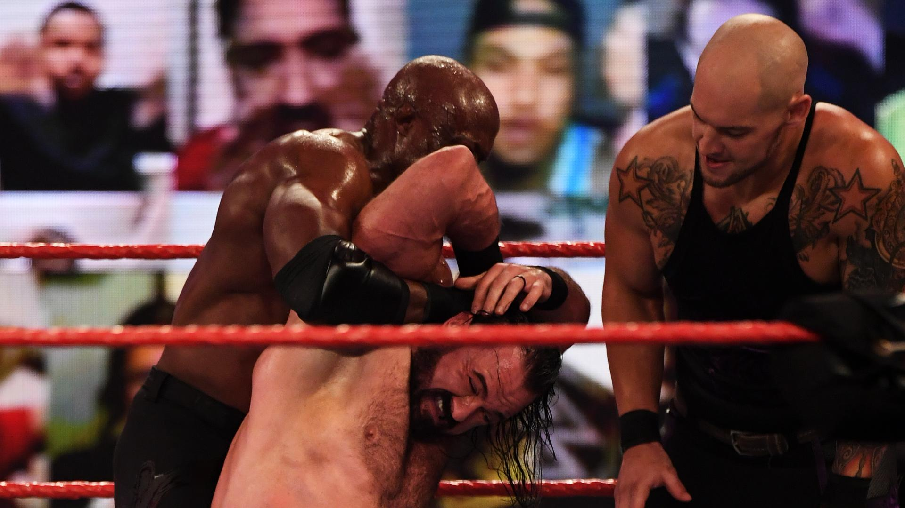
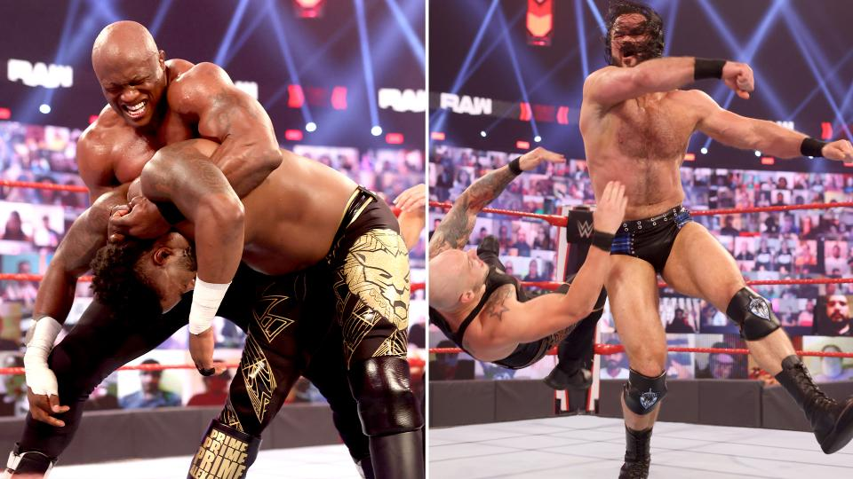
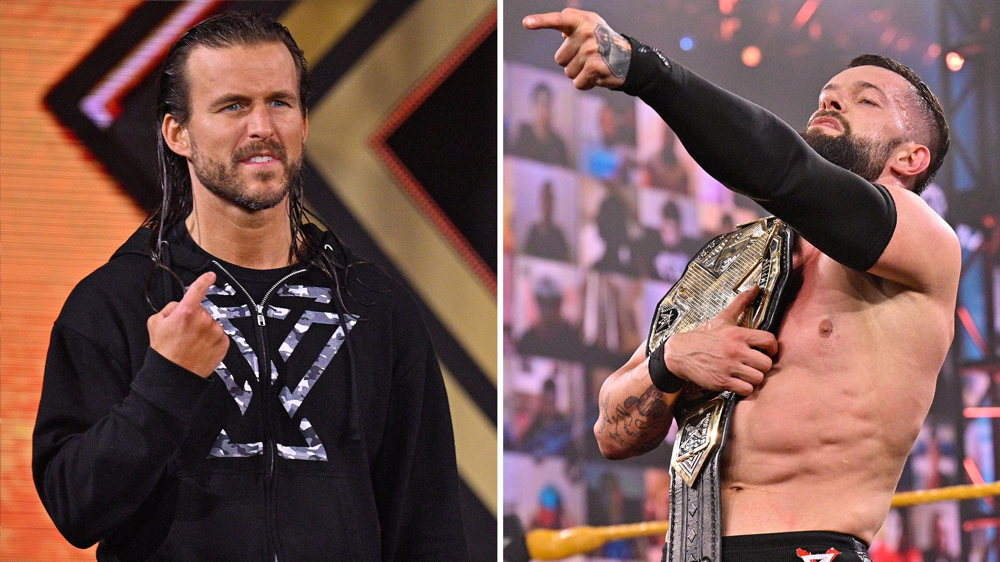

Resultados de Raw, Marzo 29, 2021: Bobby Lashley arrasa con El Guerrero Escocés en el camino a WrestleMania

El todo poderoso Bobby Lashley tentó a varias Superestrellas a enfrentar a Drew McIntyre con la promesa de guardarles un lugar en la lucha titular en WrestleMania si vencían al escocés, además Lashley también expulsó a Shelton Benjamin y Cedric Alexander del Hurt Business y mucho más.
Resultados de Raw, Abril 5, 2021: Lashley y McIntyre se alzan con grandes victorias antes de WrestleMania

En el último Raw antes de WrestleMania, el Campeón de WWE Bobby Lashley se impuso a su ex compañero de The Hurt Business Cedric Alexander, mientras que su inminente retador Drew McIntyre conquistó al Rey Corbin a cinco noches de enfrentarse al Todo Poderoso en el mayor escenario de todos.
WWE NXT, Marzo 3, 2021: Bálor prevalece antes del encuentro titular la próxima semana con Cole

El Campeón de NXT Finn Bálor obtuvo un triunfo ante Roderick Strong, poniendo las bases de su defensa titular ante Adam Cole la próxima semana. Además, LA Knight hizo sengtir su presencia, varias batallas de parejas de hombres y mujeres, y mucho más.
Resultados de SmackDown, Feb. 26, 2021: Daniel Bryan no ganó. ¿Daniel Bryan no perdió? Reigns lo ataca brutalmente después del combate
Daniel Bryan no ganó. ¿Daniel Bryan tampoco perdió? Reigns responde al reto de Daniel Bryan con un brutal asalto después del main event en SmackDown en el que Daniel Bryan trató de asegurarse la lucha por el Campeonato Universal contra Roman Reigns en WWE Fastlane. Además la ganadora de Royal Rumble Bianca Belair retó a la Campeona de SmackDown Sasha Banks en WrestleMania.
 Daniel Bryan no ganó. ¿Daniel Bryan tampoco perdió? Reigns responde al reto de Daniel Bryan con un brutal asalto después del main event en SmackDown en el que Daniel Bryan trató de asegurarse la lucha por el Campeonato Universal contra Roman Reigns en WWE Fastlane. Además la ganadora de Royal Rumble Bianca Belair retó a la Campeona de SmackDown Sasha Banks en WrestleMania.
Daniel Bryan no ganó. ¿Daniel Bryan tampoco perdió? Reigns responde al reto de Daniel Bryan con un brutal asalto después del main event en SmackDown en el que Daniel Bryan trató de asegurarse la lucha por el Campeonato Universal contra Roman Reigns en WWE Fastlane. Además la ganadora de Royal Rumble Bianca Belair retó a la Campeona de SmackDown Sasha Banks en WrestleMania.